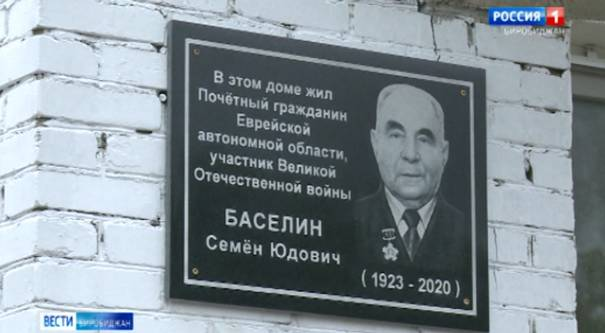

|
Семья Баселин
Баселин Семен Юдович
Из Биробиджанских
газет
Биография
Родился в 1923 г. в еврейской
земледельческой колонии Романовка на Украине. В 1941 или 1942 г. был призван в РККА. На
фронт он попал в 18 лет из военного училища и стал командиром разведроты. Принимал участие в освобождении Крыма,
Кавказа, УССР, БССР, Литвы. Получил 5 боевых ранений,
1 из которых получил в конце войны, в марте 1945 г. Командовал ротой
разведчиков. 33-яя дивизия, в составе которой он воевал, наступала на
Кёнигсберг, и бойцы наткнулись на хорошо укреплённый форт, с которого
немцы обстреливали равнину на подступах к городу. Там полегли
сотни солдат. Перед старшим лейтенантом Баселиным,
командиром 2-й стрелковой роты, поставили задачу зайти в тыл форта.
Задача была выполнена.
После войны переехал жить в Амурзет, где трудился экономистом в
сельскохозяйственной инспекции Октябрьского района ЕАО. Закончил сельскохозяйственный техникум с. Бабстово.
В 1951—1967 гг. — председатель комитета ДОСААФ
Октябрьского района.
В 1967—1992 гг. — начальник областной
автомотошколы.
Подробнее: http://cyclowiki.org/wiki/%D0%A1%D0%B5%D0%BC%D1%91%D0%BD_%D0%AE%D0%B4%D0%BE%D0%B2%D0%B8%D1%87_%D0%91%D0%B0%D1%81%D0%B5%D0%BB%D0%B8%D0%BD
95 лет со дня рождения Почетного гражданина ЕАО Баселина
Семена Юдовича
Май
Баселин Семен Юдович
родился 23 мая 1923 года в с. Романовка Березнеговского
района Николаевской области. В апреле 1941 года получил из военного
комиссариата повестку. Идти до военкомата нужно было 18 километров, но
юноша явился туда к назначенному часу и предложение поехать на учебу в
Краснодарское военное училище принял с благодарностью.
В Краснодаре Семен успешно сдал экзамены. Мандатная комиссия
признала его годным по здоровью. Но тут началась война. Учебные
батальоны училища, пройдя ускоренную боевую и тактическую подготовку, в
составе 12-й курсантской бригады встали на защиту Крыма. В тяжелых боях
за полуостров в марте 1942 года Семен Баселин
получил пулевое ранение. Ранение, по признанию врачей, оказалось
тяжелое. Лечащий врач, не желая кривить душой, уходил от прямого ответа
на вопрос бойца: станет ли он когда-нибудь на раненую ногу. После
излечения учился в Буйнакском военном училище, по окончании которого
ему было присвоено звание лейтенанта и получает назначение в 366-й
стрелковый полк 126-й стрелковой дивизии, воевавшей на Тереке. Там ему,
командиру стрелковой роты, пришлось оборонять Нальчик, в котором
восстанавливал здоровье после первого тяжелого ранения, и там был ранен
вторично. Команда тяжелораненых бойцов, в числе которых был и лейтенант
Баселин, нуждалась в серьезном лечении в
тыловом госпитале, и командование принимает очень рискованное решение:
в сопровождении врача, медсестры и группы охраны переправить раненых
через горный перевал в Грузию. Эта эвакуационная операция тяжелораненых
бойцов казалась, на первый взгляд, неразрешима. Но благодаря мужеству и
геройству тех участников, кто ее осуществил, спасла жизнь Семену Баселину и другим раненым. И на этот раз усилиями
врачей Кутаисского госпиталя лейтенант Баселин
вновь возвращается на фронт, но уже в составе соединения 2-й
гвардейской армии принимает участие в наступательной операции по
освобождению Перекопского перешейка,
форсировав Сиваш. 17-я отборная немецкая армия оказалась прочно запертой
в Крыму.
После окончания войны
Семен Баселин не сразу возвратился в родные
края. До этого была учеба в Москве на высших офицерских курсах
«Выстрел», и только в 1948 году офицерский китель он сменил на
гражданский костюм. Проведал родное село. От односельчан выслушал
печальный рассказ о том, как фашистские оккупанты зверски расправились
с евреями из его родной Романовки, что в Николаевской области, не
пощадили даже малолетних детей, которых сельчане пытались спасти. Его
любимую маму и младшую сестренку уберечь не удалось. Семен вдруг
почувствовал, что он, солдат, плачет.
Вскоре пассажирский поезд Киев-Владивосток увозил Баселина в далекий неизвестный Биробиджан, откуда
еще предстояло добраться до села со странным названием Пузино. Сюда
после войны переехал по переселению его отец. Отдохнуть после всего
пережитого им не пришлось. Кругом еще чувствовались последствия тяжелой
войны. Хозяйство в колхозе пришло в упадок. Отец сутками пропадал в
мастерской, ремонтируя колхозную технику. Семену от отца досталась его
удивительная работоспособность. Колхозное руководство было им довольно:
как быстро он строил сборные дома для переселенцев и выполнял другую
работу в хозяйстве. Позже Семену Баселину
доверили поднять престиж оборонного общества в автономии.
И через несколько лет на пятом съезде общества ДОСААФ легендарный
командарм Первой конной армии Семен Михайлович
Буденный за большие заслуги в оборонно-массовой работе вручил Семену Юдовичу Почетный знак ДОСААФ СССР.
В 1950 году при образовании ДОСААФ на районной конференции был
избран председателем президиума райкома ДОСААФ.
В 1967 году в г. Биробиджане была создана
автомобильная школа ДОСААФ. По рекомендации облисполкома, крайкома
ДОСААФ начальником школы утвердили Баселина С.Ю. В областной школе ДОСААФ Семен Юдович проработал до 1991 года. И вновь, как
прежде, ему пришлось начинать с нуля – фактически имелась только
площадка под строительство. В короткие сроки были построены гараж на 25
машин, помещение для хранения материальных ценностей, автомотодром со
всеми элементами учебной программы. Были решены вопросы по оснащению
школы учебным оборудованием. Под руководством Семена Юдовича автомобильная школа ежегодно готовила более
500 квалифицированных водителей категории «В-С»
для Вооруженных сил и 1800 специалистов для народного хозяйства.
В 1991 году на городской конференции садоводов г.
Биробиджана С.Ю. Баселин был избран
председателем садово-огородного товарищества «13 км». Большая работа
была проведена по благоустройству улиц и дорог, увеличились посадки
фруктовых деревьев и кустарников. Дачный поселок был полностью
электрифицирован, проводилась большая практическая работа по сохранению
зеленых зон, окружающего леса.
В 1998 году для оказания моральной поддержки ветеранов войны,
труда, Вооруженных сил и правоохранительных органов в Биробиджане было
создано общественное учреждение «Дом ветеранов», директором которого
стал С.Ю. Баселин. Семён Юдович
сумел создать крепкий сплоченный коллектив. При Доме ветеранов
функционируют клубы по интересам: «Хорошее настроение», «Хозяюшка»,
«Наши земляки», «Здоровье» вокально-хоровая группа.
Семен Юдович Баселин
- подполковник в отставке, пенсионер Министерства обороны России. Часто
встречается с учащимися в клубе «Патриот» при кинотеатре «Родина», с
призывниками РОСТО, читателями детско-юношеской библиотеки и воинами
Биробиджанского гарнизона. Он уделяет серьезное внимание воспитанию
подрастающего поколения на славных боевых и трудовых традициях. За
активную работу по патриотическому воспитанию молодежи неоднократно
поощрялся Центральным советом ветеранов России, наградами Еврейской
автономной области. С.Ю. Баселин награжден орденами Александра Невского, боевого
Красного Знамени, двумя орденами Великой Отечественной войны I и II
степени, орденом Почета.
Литература:
1.
Баселин Семен Юдович
// Почетные граждане Еврейской автономной области. – Биробиджан, 2009.
– С. 9.
2.
Павлова, В. Жизнь как мгновение : [о ветеране ВОВ Семене Юдовиче
Баселине] / В. Павлова // Биробиджанер
штерн. - 2013. – 22 мая. - С. 7.
3.
Файнзильберг, Ю. Курсант, боевой офицер, ветеран : [к 90-летию биробиджанца,
участника ВОВ Семена Юдовича Баселина] / Ю. Файнзильберг
// Биробиджанская звезда. - 2013. - 8 мая. - С. 9.
Баселин Семён Юдович.
1923 года рождения
Из наградного листа:
«31 января 1945 года в бою с немецкими захватчиками в районе Зудау в Восточной Пруссии товарищ Баселин показал себя исполнительным, смелым,
способным офицером, хорошо умеющим управлять своим подразделением в
бою. Противник на подступах к населенному пункту
оказывал упорное сопротивление, товарищ Баселин
скрытно вывел свою роту в тыл противника и, выполняя самостоятельно
боевую задачу, ворвался первым в населенный пункт, наведя панику, в
результате чего ротой товарищ Баселина
уничтожено 70 немецких солдат, подбит бронетранспортер, захвачено 12
пулеметов, 40 автомашин, 4 склада с боеприпасами и взято в плен до 25
немецких солдат. Умелым маневром товарищ Баселин
разбил численно превосходящего противника, захватил населенный пункт,
не понеся при этом значительных потерь.
За проявленные мужество и отвагу награжден
орденом Александра Невского.
В боях за овладение городом-крепостью Кенигсберг с 6 по 8 апреля
1945 года показал себя смелым, мужественным воином, хорошо умеющим
управлять батальоном в бою. Первым прорвал оборону противника на
подступах к городу, штурмом овладел 4-этажным домом, который немцы
превратили в опорный пункт, выбил оттуда противника, дав возможность
подразделениям продвинуться вперед. Рота товарища Баселина
в боях за Кенигсберг уничтожила до 70 немецких солдат, захватила 56
пленных, 6 станковых пулеметов, при этом товарищ Баселин
сумел сохранить личный состав и материальную часть.
За проявленные мужество и отвагу награжден
орденом Красного Знамени».
Баселин Семен Юдович
Семен Юдович родился 23 мая 1923 года в
еврейской земледельческой колонии Романовка на Украине.
В 1942 году был призван в армию. На фронт он попал в 18 лет из
военного училища и, несмотря на свои юные годы, стал командиром разведроты.
С.Ю. Баселин участвовал в освобождении
Крыма, Кавказа, Украины, Белоруссии, Литвы. После взятия Витебска его
представили к награждению орденом Боевого Красного Знамени.
У Семена Юдовича было пять боевых
ранений, одно из которых он получил в конце войны, в марте сорок
пятого. С.Ю. Баселин командовал ротой
разведчиков. Тридцать третья Севастопольская дивизия, в составе которой
он воевал, наступала на Кенигсберг, и бойцы наткнулись на хорошо
укрепленный форт, с которого враг обстреливал равнину на подступах к
городу. Там полегли сотни солдат. Перед старшим лейтенантом Баселиным поставили задачу зайти в тыл форта.
Задача была выполнена. За участие в этой операции Семен Юдович получил орден Александра Невского.
После окончания войны Семен Юдович
приехал жить в Амурзет, где работал
экономистом в сельскохозяйственной инспекции Октябрьского района. Он
окончил сельскохозяйственный техникум с. Бабстово, хотя кроме военного
образования у него уже было высшее политическое.
Благодаря Семену Юдовичу были
заложены основы будущей системы ДОСААФ в ЕАО: он почти с нуля создавал
при местном и областном отделениях этой Всероссийской организации автомобильные
школы: сначала в Октябрьском
районе, а затем и Биробиджане.
С 1951 по 1967 гг. – председатель комитета ДОСААФ Октябрьского
района. В 1962 году был участником V съезда ДОСААФ СССР.
С 1967 по 1992 гг. – начальник областной автомотошколы. Под руководством
Семена Юдовича автомобильная школа ежегодно
обучала более 500 юношей вождению машин и мотоциклов, а также
подготовила более двух тысяч шоферов для народного хозяйства.
Семен Юдович всегда пользовался большим
авторитетом, доверием и уважением среди земляков. Он был председателем
правления садово-огородного товарищества, директором Дома ветеранов
города Биробиджана. Он возглавил его в 1995 году, руководил
учреждением 15 лет, и за эти годы многое сделал не только для
подрастающего поколения, но и для ветеранов войны и труда. €За активную
общественную работу по социальной поддержке ветеранов и патриотическому
воспитанию молодежи С.Ю. Баселин был
награжден орденом Почета.
Также С.Ю. Баселин был награжден орденами
Александра Невского, Боевого Красного Знамени, орденами Великой
Отечественной Войны I и II степени.
8 декабря 2020 года Семен Юдович ушел из
жизни.
На доме, где он проживал, установлена памятная доска.
http://zseao.ru/2017/02/baselin-semen-yudovich/
Мемориальную доску
Семёну Юдовичу Баселину
открыли в Биробиджане
·
01.07.2021
·
Общество
·
390
·
Память о ветеране увековечили на доме, в котором он проживал.

Увековечили память ветерана Великой
Отечественной Семёна Юдовича Баселина. Сегодня в областном центре состоялось
торжественное открытие мемориальной доски на доме, в котором он
проживал. Семён Юдович — почетный гражданин
автономии, был награждён орденами Александра Невского, Боевого Красного
Знамени, двумя орденами Великой Отечественной войны 1 и 2 степени. Он
участвовал в освобождении Крыма, Украины, Белоруссии, Литвы,
Кенигсберга. В регионе ветеран жил и трудился с 1948 года. Под
руководством Семена Юдовича образовалась и
развивалась областная автомотошкола. Он был директором
биробиджанского дома ветеранов. Внес вклад в патриотическое воспитание
подрастающего поколения, рассказывая о войне «от первого лица».
Любовь Павлова, председатель законодательного собрания ЕАО:
— Всей своей жизнью он заслужил. Заслужил особенной памяти о нём.
Все, кто выступал, говорили, что он внёс значительный вклад. Вклад в
Победу над фашистской Германией, свой трудовой вклад в развитие
области. Он имел орден Славы за работу в мирное время. Это
заслужено.
Честность, доброта, отзывчивость — качества, которые вызывали
уважение у всех, кто знал Семёна Юдовича. В
торжественной церемонии приняли участие представители органов
власти, коллеги и родственники ветерана.
Владимир Баселин, сын ветерана:
— Семья воспитывалась только на авторитете. Я не помню, чтоб он
занимался воспитанием. Марку семьи и марку фамилии все выдержали
— и внуки, и дети. Самое главное — его скромность. Он никогда не ячился. Хотя, если подумать, он в 22 года получил
три больших ордена.
Автор: О. Козьменкова
Оператор: О. Гриценко
https://biratv.ru/memorialnuyu-dosku-semyonu-yudovichu-baselinu-otkryli-v-birobidzhane/
Встреча на фронте
· 27.01.2010
· Биробиджанская
Звезда
· 65 лет победы
· 467
· Редактор
1945 г. Отец и сын Баселины. Фото из дивизионной газеты, рассказавшей
об удивительной встрече
— Мой отец,
Семен Юдович Баселин,
при разговорах о войне часто вспоминает один удивительный эпизод
на фронте:
— После
очередного ранения мне удалось по пути из госпиталя на фронт заехать в
родное село Романовка. Там я узнал страшную весть — в селе зверствовали
немцы, почти всех расстреляли. Погибли все мои родственники, соседи,
друзья. От тех немногих, кто выжил, узнал, что отца мобилизовали
незадолго до оккупации. Где он, как он сейчас, жив ли — я совершенно не
знал, и от этого было страшно…
Воюя в 33-й
Севастопольской дивизии, я дошел до Восточной Пруссии, Кенигсберга. Это
был уже 1945-й год… Я, в ту пору младший лейтенант, командовал ротой
разведки, мне было 22 года. Там опять был ранен. Уже в госпитале в
Тильзите узнал, что наши взяли Кенигсберг.
А перед
торжественным построением, на котором мне и еще многим солдатам вручали
воинские награды (я был награжден орденом Александра Невского и орденом
Боевого Красного Знамени), начальник штаба мне и сказал: “Баселин, к нам пришло письмо от твоего отца…”
Помнится, у меня тогда ноги чуть не подкосились, на глазах — слезы…
Письмо — как еще одна награда! Руки дрожали, когда раскрывал этот
конвертик.
Отец писал,
что с ним все хорошо, что служит в 5-й понтонной бригаде кузнецом.
Он и в селе был знатный кузнец…
Когда я уже
уезжал из тильзитского госпиталя, нашей машине по пути
встретилась военная колонна. Вижу — вроде как понтонщики! У меня аж сердце екнуло. Сказал водителю, чтобы остановил,
сдал назад.… Подскочил к командной машине, обратился к сидевшему в ней
майору: “Скажите, какая это бригада?” “5-я понтонная”, — отвечает. “А Баселин у вас служит?” “Да, знаю его, — говорит,
улыбаясь, майор. — Он у нас при штабе”. Узнав, что это мой отец, он
позвал меня с собой в город Тельвинк, где
расположились понтонщики…
В городе меня
сразу доставили к начальнику штаба, я доложил, что да как. Не долго думая, он дал команду позвать отца. И тот
заходит — здоровенный такой, крепкий… Что тут
было — объятия, слезы… Вечером нам устроили целый праздник, накрыли
столы. Фотографировали встречу отца с сыном, в дивизионной газете была
статья…
А на следующий
день, когда я, переночевав у начальника штаба, уезжал, отец вышел меня
провожать на дорогу. И махал мне вслед рукой до тех пор, пока было
видно мою машину…
Позже я служил
в тылу, потом был направлен на московские высшие курсы
усовершенствования офицерского состава.… После войны, имея шесть
ранений, по состоянию здоровья был демобилизован, поехал домой, в
Романовку. А там и пришедший из армии мой отец ждал меня…
Владимир
Баселин, г. Биробиджан
https://www.gazetaeao.ru/vstrecha-na-fronte/
Баселин Семен Юдович
Год рождения: 23.05.1923
Место рождения: колония Романовка, Березнеговатского
района, Николаевской области, Украина.
Воинское звание: лейтенант; ст.
лейтенант; подполковник
Дата
поступления на службу 17.06.1941
Место
призыва Березнеговатский РВК, Украинская ССР,
Николаевская обл., Березнеговатский р-н
Должности : командир роты
Награды:
Ордена:
« Отечественной войны I
степени » 23.10.1944
«Александра
Невского» 22.03.1945
«Орден Красного
Знамени» 25.04.1945
« Отечественной войны I
степени » 06.04.1985
Медали:
«За оборону
Кавказа», 06.11.1945
«За взятие Кенигсберга»
«За победу над Германией в Великой
Отечественной войне 1941–1945 гг.»
Из наградного листа:
Командир 2-й
стрелковой роты гвардии лейтенант Баселин
5.10.44г. в районе Шадвигсее Литовской ССР при прорыве немецкой
обороны, умело руководил
боем, первый поднял в атаку свою
роту, невзирая на сопротивления
противника почти без потерь
выбил противника из трех линиы
траншей, уничтожив при этом ротой до 50 солдат и офицеров противника. В траншеях гранатами
подорвал 3 станковых пулемета. Закрепившись, рота дала возможность
остальным подразделениям продвинуться вперед. Рота первой ворвалась в село Полукай, овладев им.
Гвардии лейтенант Баселин
Семен Юдович достоин награды орденом
«Отечественной войны 1 степени».
Командир гвардии
подполковник
Батников.
13 октября 1944 года.
Из наградного листа:
31.01. 1945 года в бою с немецкими захватчиками в
районе Зудау Восточная Пруссия, гвардии
лейтенант Баселин показал себя исполнительным,
смелым, способным офицером хорошо умеющим управлять своим
подразделением в бою. Противник на подступах к населенному пункту
оказывал упорное сопротивление, тов. Баселин
скрытно вывел свою роту в тыл противника и
выполняя самостоятельно боевую задачу ворвался первым в населенный
пункт, навел панику, в результате чего ротой тов. Баселина
уничтожено 70 немецких солдат, подбит бронетранспортер, захвачено 12
пулеметов, 40 автомашин, 4 склада с боеприпасами и взято до 25 пленными
немецких солдат, умелым маневром тов. Баселин
разбил численно превосходящего противника, захватил населенный пункт,
не понеся при этом значительных потерь.
Гвардии лейтенант Баселин
Семен Юдович достоин награды ордена «Александра Невского».
Командир гвардии подполковник Монаков
12 февраля 1945 года.
Из наградного листа:
Гвардии ст. лейтенант Баселин в боях за овладение города и крепости Кенинсберг с 6 по 8 апреля 1945 года показал себя
смелым, мужественным воином, хорошо умеющим управлять батальоном в бою.
За период боев рота тов. Баселина
показала образцы отваги и боевой выучки. Первым пропвал
оборону противника на подступах к городу, тов. Баселин
развивая успех наступления ворвался на окраины города, штурмом
овладел 4-х этажным домом, который немцы превратили в опорный пункт,
выбили оттуда противника, дав возможность остальным подразделениям
продвинуться вперед.
Рота тов. Баселеина
в боях за город Кенинсберг уничтожила до 70 вражеских солдат, захватила 56
пленных, 6 станковых пулеметов,
при этом тов. Баселин сумел сохранить личный
состав и материальную часть. Тем
самым тов. Баселин способствовал успешному
продвижению батальона вперед и овладением города Кенинсберг.
Гв. Старший
лейтенант Баселин Семен Юдович
достоин правительственной награды ордена «Красное Знамя».
Командир полка гвардии
майор Коровниченко
18 апреля 1945 года
Данные из УПК (учётно - послужной карты, портал "ПАМЯТЬ
НАРОДА").
Баселин Семен Юдович
Учетно-послужная картотека
Дата рождения: 23.05.1923
Место рождения: Украинская ССР, Николаевская обл., Березнеговатский р-н, с.
Романовка
Наименование военкомата: Березнеговатский
РВК, Украинская ССР, Николаевская обл., Березнеговатский
р-н
Дата поступления на службу: 17.06.1941
Воинское звание: майор
Наименование воинской части: 12 курсантская
бр. ЮжнФ, 91 гв. п 33 сд 43 А 3 БелФ
Дата окончания службы: 18.09.1946
Информация об архиве -
Источник информации: ЦАМО
Номер шкафа: 15
Номер ящика: 15
Баселин Семен Юдович
Учетно-послужная картотека
Дата рождения: __.__.1923
Место рождения: Украинская ССР, Николаевская обл., Березнеговатский р-н, с.
Романовка
Дата поступления на службу: __.__.1941
Воинское звание: ст. лейтенант
Наименование воинской части: ВС ЮжнФ, 91 гв. сп 33 гв. сд 54 ск 2 гв. А 1 ПрибФ
Дата окончания службы: 18.09.1946
Информация об архиве -
Источник информации: ЦАМО
Номер шкафа: 15
Номер ящика: 15
Баселин Семен Юдович
Учетно-послужная картотека
Дата рождения: 23.05.1923
Место рождения: Украинская ССР, Николаевская обл., Березнеговатский р-н, с.
Романовка
Дата поступления на службу: __.06.1941
Воинское звание: ст. лейтенант
Наименование воинской части: 12 курсантская
бр. ЮжнФ, 91 гв. сп 33 гв. сд
Дата окончания службы: 18.09.1946
Награды: Медаль «За взятие Кенигсберга», Медаль
«За оборону Кавказа», Медаль «За победу над Германией в Великой
Отечественной войне 1941–1945 гг.»
Информация об архиве -
Источник информации: ЦАМО
Номер шкафа: 15
Номер ящика: 15
Баселин Семен Юдович
Записи из военкоматов
Дата рождения: 23.05.1923
Место рождения: с. Романовка Березнеговского
района Николаевской области
Наименование военкомата: Николаевским РВК
Дата призыва: __.04.1941
Воинское звание: лейтенант
Информация об архиве -
Источник информации: ВК Еврейской
АО
Наградные документы:
Басилин Семен Юдович
Орден Отечественной войны I степени
Наградной документ
Дата рождения: __.__.1923
Место призыва: Березнеговатский
РВК, Украинская ССР, Николаевская обл., Березнеговатский
р-н
Дата поступления на службу: __.__.1941
Воинское звание: гв.
лейтенант
Воинская часть: 91 гв. сп 33 гв. сд 54 ск 2 гв. А 1 ПрибФ
Даты подвига: 05.10.1944
Наименование награды: Орден Отечественной войны I степени
Приказ подразделения
№: 26/н от: 23.10.1944
Издан: 54 ск 2 гв.
А 1 Прибалтийского фронта
Информация об архиве -
Архив: ЦАМО
Фонд ист. информации: 33
Опись ист. информации: 690155
Дело ист. информации: 4476
Баселин Семен Юдович
Орден Александра Невского
Наградной документ
Дата рождения: __.__.1923
Место призыва: Березнеговатский
РВК, Украинская ССР, Николаевская обл., Березнеговатский
р-н
Дата поступления на службу: __.__.1941
Воинское звание: гв.
лейтенант
Воинская часть: 91 гв. сп 33 гв. сд 39 А
Даты подвига: 31.01.1945
Наименование награды: Орден Александра Невского
Приказ подразделения
№: 312 от: 22.03.1945
Издан: ВС 39 А
Информация об архиве -
Архив: ЦАМО
Фонд ист. информации: 33
Опись ист. информации: 686196
Дело ист. информации: 2146
Баселин Семен Юдович
Орден Красного Знамени
Наградной документ
Дата рождения: __.__.1923
Место призыва: Березнеговатский
РВК, Украинская ССР, Николаевская обл., Березнеговатский
р-н
Дата поступления на службу: __.05.1941
Воинское звание: гв. ст.
лейтенант
Воинская часть: 91 гв.п 33 сд 43 А 3 БелФ
Даты подвига: 06.04.1945-08.04.1945
Наименование награды: Орден Красного Знамени
Приказ подразделения
№: 123 от: 25.04.1945
Издан: ВС 43 А 3 Белорусского фронта
Информация об архиве -
Архив: ЦАМО
Фонд ист. информации: 33
Опись ист. информации: 686196
Дело ист. информации: 6920
Баселин Семен Юдович
Медаль «За оборону Кавказа»
Наградной документ
Воинское звание: гв. ст.
лейтенант
Воинская часть: Московские курсы усовершенств.
офицер. пех.
Наименование награды: Медаль «За оборону Кавказа»
Приказ подразделения
от: 06.11.1945
Издан: Московские курсы усовершенствования офицеров пехоты
Информация об архиве -
Архив: ЦАМО
Фонд ист. информации: 135
Опись ист. информации: 12761
Дело ист. информации: 748
Баселин Семен Юдович
Орден Отечественной
войны I степени
Документ в юбилейной картотеке
Дата рождения: __.__.1919
Место рождения: Украинская ССР, Николаевская обл., Березнеговатский р-н, с.
Романовка
Наименование награды: Орден Отечественной войны I степени
Номер документа: 76
Дата документа: 06.04.1985
Автор документа: Министр обороны СССР
Информация об архиве -
Архив: ЦАМО
Картотека: Юбилейная картотека награждений
Расположение документа: шкаф 2, ящик 44
Баселин Юдас
Срулевич
Год рождения: __.__.1899
Место рождения: колония Романовка, Березнеговатского
района, Николаевской области, Украина.
Воинское звание: красноармеец, рядовой
Дата
поступления на службу __.__.1941
Место
призыва Березнеговатский РВК, Украинская ССР,
Николаевская обл., Березнеговатский р-н
Должности : шофер
Награды:
Ордена:
« Отечественной войны II степени » 23.12.1985
Медали:
«За боевые заслуги» 21.06.1944
«За оборону Кавказа» 22.05.1945
«За победу над Германией в Великой
Отечественной войне 1941–1945 гг.»
Из
наградного листа:
Красноармеец тов. Баселин
Ю.С. входил в состав расчета,
который выполнял боевое задание по содержанию паромной переправы через
реку Дон. Переправа была подвергнута бомбардировке со стороны вражеской
авиации во время которой рядовой Баселин был ранен осколками в кисть правой руки.
После излечения вернулся в батальон, работая в бригаде по ремонту
машин, проявляет инициативу и находчивость в использовании местных
ресурсов. На полную мощность
работают моторы установленные на паромах СП-19
ремонтируемые тов. Баселиным.
Вывод: тов. Баселин
участник Отечественной войны, раненный в боях с немецко-фашистскими
захватчиками достоин правительственной награды медаль «ЗА боевые
Заслуги»
Командир
батальона подполковник
Ильченко
27
мая 1944г.
Данные из УПК (учётно
- послужной карты, портал "ПАМЯТЬ НАРОДА").
Дата рождения
__.__.1899
Место рождения
Украинская ССР, Николаевская обл., Березнеговатский р-н, с.
Романовка
Место призыва
Березниковский РВК, Архангельская обл., Березниковский р-н
Воинское звание
красноармеец; рядовой
Воинская часть
19 отдельный моторизованный
понтонно-мостовой батальон
Награды
Медаль «За боевые заслуги»
Орден Отечественной войны II степени
-->
Баселин Юдас
Срулевич
Новый
Именной список части
Дата рождения: __.__.1899
Место рождения: Украинская ССР, Николаевская обл., Березнеговатский р-н, с.
Романовка
Место призыва: Березнеговатский
РВК, Украинская ССР, Николаевская обл., Березнеговатский
р-н
Дата призыва: 12.08.1942
Воинское звание: красноармеец
Воинская часть: 19 омпмб
Дата прибытия: 21.02.1943
Откуда прибыл: 1339 сп
Информация об архиве -
Источник информации: ЦАМО
Фонд ист. информации: 31768
Опись ист. информации: 707768
Дело ист. информации: 1
Наградные документы:
Баселин Юдас Фолевич
Медаль «За боевые заслуги»
Наградной документ
Дата рождения: __.__.1899
Место призыва: Березниковский
РВК, Украинская ССР, Николаевская обл.
Дата поступления на службу: __.__.1941
Воинское звание: красноармеец
Воинская часть: 19 омпомб ОПА
Наименование награды: Медаль «За боевые заслуги»
Приказ подразделения
№: 417/н от: 21.06.1944
Издан: ВС ОПА
Информация об архиве+
Баселин Юдас
Срулевич
Орден Отечественной войны II степени
Документ в юбилейной картотеке
Дата рождения: __.__.1899
Место рождения: Украинская ССР, Николаевская обл., Березнеговатский р-н, с.
Романовка
Наименование награды: Орден Отечественной войны II степени
Номер документа: 196
Дата документа: 23.12.1985
Автор документа: Министр обороны СССР
Информация об архиве -
Архив: ЦАМО
Картотека: Юбилейная картотека награждений
Расположение документа: шкаф 2, ящик 44
Баселин Юда Срулевич
Медаль «За оборону Кавказа»
Наградной документ
Воинское звание: рядовой
Воинская часть: 98 опмб
Наименование награды: Медаль «За оборону Кавказа»
Приказ подразделения
№: 122/576 от: 22.05.1945
Издан: 19 омпмб
Информация об архиве -
Архив: ЦАМО
Фонд ист. информации: 33
Опись ист. информации: 44677
Дело ист. информации: 557
|

{kind=link}